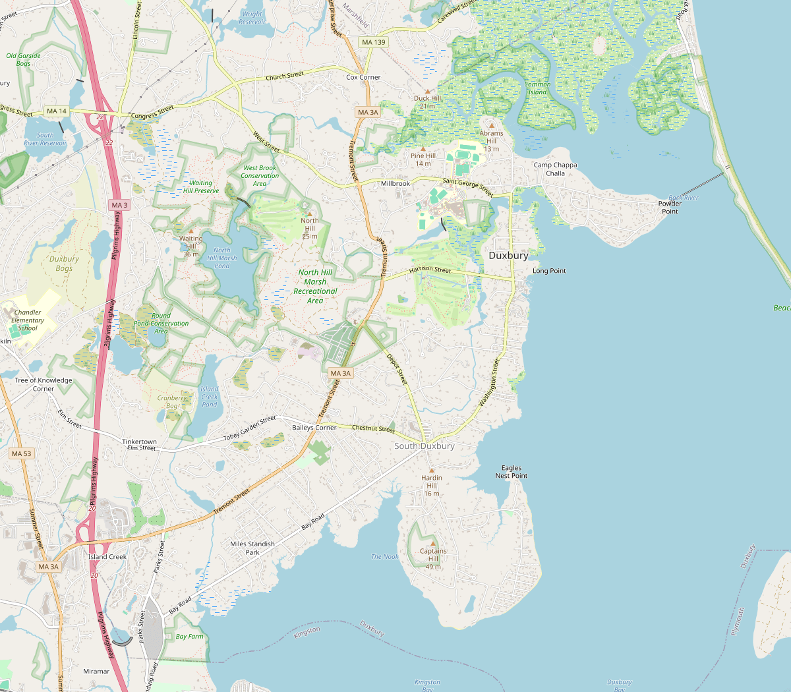

Duxbury Bay — Public Water Access Points
Duxbury Bay Management Commission · Click any marker to view site details

Duxbury Bay — Public Access Points
22 Town Landings · 5 Ways to the Water | Click a marker to open site details
TOWN LANDINGS
1
01. Ford Stand Landing
2
02. Old Cove Landing
3
03. Drew Salt Works Landing
4
04. Shipyard Lane (Ellison Beach)
5
05. Powder Point Landing
6
06. Powder Point Bridge (W. End)
7
07. Anchorage Lane Landing
8
08. Bluefish River Landing
9
09. Sagamore Road Landing
10
10. Mattakeeset Town Pier
11
11. Winsor Street Landing
12
12. Jocelyn Lane Landing *
13
13. Massasoit Road Landing
14
14. Water Street Landing
15
15. Harden Hill Road Landing
16
16. Elderberry Lane
17
17. Bay Farm
18
18. Hicks Point Road Landing
19
19. Miles Standish Home Site
20
20. Howland's Landing
21
21. Landing Road Beach
22
22. Island Creek Pond
WAYS TO THE WATER
W1
WW-01. Simeon Soule's Landing *
W2
WW-02. Elder Brewster Road
W3
WW-03. Somerset Road *
W4
WW-04. Peterson's Landing
W5
WW-05. Longview Road *
* Location approximate — verify against Chapter 7
01. Ford Stand Landing
1
02. Old Cove Landing
2
03. Drew Salt Works Landing
3
04. Shipyard Lane (Ellison Beach)
4
05. Powder Point Landing
5
06. Powder Point Bridge (W. End)
6
07. Anchorage Lane Landing
7
08. Bluefish River Landing
8
09. Sagamore Road Landing
9
10. Mattakeeset Town Pier
10
11. Winsor Street Landing
11
12. Jocelyn Lane Landing
12
13. Massasoit Road Landing
13
14. Water Street Landing
14
15. Harden Hill Road Landing
15
16. Elderberry Lane
16
17. Bay Farm
17
18. Hicks Point Road Landing
18
19. Miles Standish Home Site
19
20. Howland's Landing
20
21. Landing Road Beach
21
22. Island Creek Pond
22
WW-01. Simeon Soule's Landing
W1
WW-02. Elder Brewster Road
W2
WW-03. Somerset Road
W3
WW-04. Peterson's Landing
W4
WW-05. Longview Road
W5